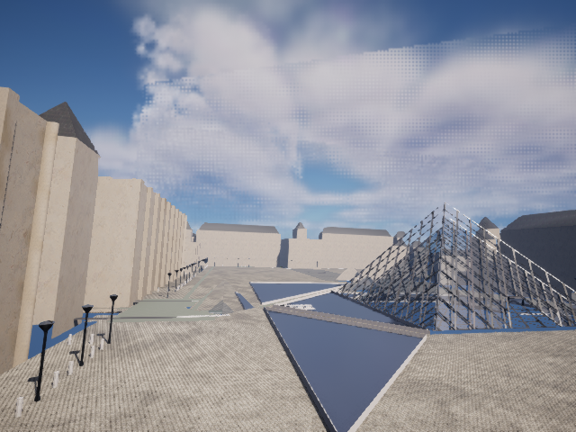

Aligned observations
Rendered RGB, depth arrays, material IDs and optional mesh masks support segmentation, scene reconstruction and synthetic-to-real studies.
Your mate for material-aware urban simulation. Connect what a city looks like with what it is made of.

 RGB APPEARANCEMATERIAL LABELS
RGB APPEARANCEMATERIAL LABELSSwitch between aligned RGB, depth, material and mesh views. Each layer describes a different part of the same synthetic scene.
Explore the material-aware Unreal Engine export of Bryggen. Switch between textured appearance and material classes, then inspect the source material and its physical metadata.
Explore the geometry behind the images.
Loaded on demand to keep this page lightweight.
Source: Bryggen_ue.glb. The web preview retains geometry, material assignments, UVs, normals and PBR material channels, with reduced texture resolution. Material classes and physical properties come from the dataset metadata; Unknown labels remain Unknown. Measurement details ↗
A semantic-segmentation baseline reported in the ACM Multimedia 2025 paper. These results refer to the original seven-scene release.
Class-averaged segmentation performance.
Overall fraction of correctly classified pixels.
Reported aggregate performance does not imply equal accuracy for every material. Steel is a difficult minority class (reported IoU: 0.0026). These are published results, not a new run or a city-held-out generalization claim.

Per-class IoU from the published evaluation, expressed as a percentage.
Source values and protocol (JSON) ↗File counts from the three available local exports. This is a reproducible inventory of these folders, not the full v3 release.
Download measurements (JSON) ↗| Scene | RGB | Depth arrays | Label arrays |
|---|
An animated wipe reveals the material mask registered to the Louvre RGB image. It shows two data layers of one frame.
UR-MAT connects pixel-level observations to urban surfaces. The release includes precomputed coloured point clouds, camera poses and mesh-to-material mappings as well as the image layers shown above.
Rendered RGB, depth arrays, material IDs and optional mesh masks support segmentation, scene reconstruction and synthetic-to-real studies.
Mapping folders hold camera poses and mesh metadata. Coloured, material-labelled point clouds provide a ready-made 3D representation.
Per-mesh JSON annotations associate materials with permittivity, attenuation and reflectance for material-aware simulation and wireless propagation research. Together these layers support urban AI and smart-city applications.
Use raw arrays for numerical analysis and the PNG visualizations for inspection. The release describes train/, val/ and test/ splits, plus scene-specific *_mapping/ and *_pointclouds/ folders.
Works with Unreal Engine, PyTorch and MATLAB pipelines.
| Folder | Contents |
|---|---|
rgb/ | Rendered colour images |
depth_png/ | Normalized depth previews |
depth_npy/ | Raw depth arrays |
segmentation_material_png/ | Material colour masks |
segmentation_material_npy/ | Integer material labels |
segmentation_mesh/ | Optional mesh-identity masks |
metadata/ | Material and physical-property JSON |
Release structure, supported workflows and applications: Zenodo v3 record ↗. The 2025 benchmark above is reported separately from this later release.
Get the images, 3D scenes and physical material metadata.
Release v3 adds Maradona Stadium to the original seven scenarios.
Multimodal observations, labels, mappings and point clouds.
Dataset_URMAT_v3.zip ↓53d9fd60041cbbbacb240dfa01f7ad30Full-resolution scene exports for geometry and material-aware workflows.
glb_v3.zip ↓9920c8177cba320e2ad11b0cca664b10Scene-level material annotations and associated physical properties.
scene_physical_metadata.zip ↓994dd4eb8068461c3ba89fc20dcb3243Sizes and checksums are those listed by Zenodo (18.0 GB total). Release manifest ↗ · Dataset rights and licensing ↗
@inproceedings{russo2025ur,
title={UR-MAT: A Multimodal, Material-Aware Synthetic Dataset of Urban Scenarios},
author={Russo, Debora and Mazzocca, Nicola and Vittorini, Valeria},
booktitle={Proceedings of the 33rd ACM International Conference on Multimedia},
pages={13164--13169},
year={2025},
doi={10.1145/3746027.3758314}
}